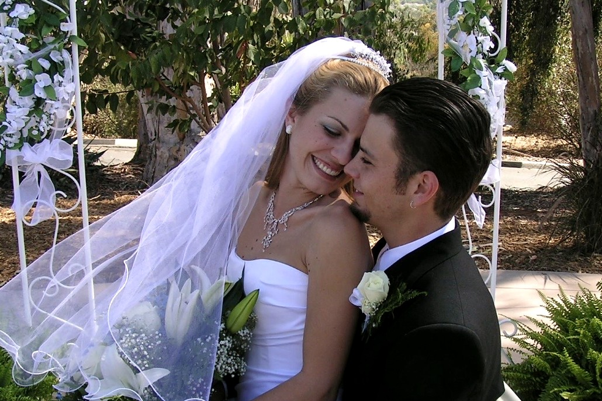

Hard Season Support
One-on-one support for the seasons that change everything.
For all faith traditions and everything in-between.
Twelve hours of premarital sessions with both of us, and Heartwood, your private app for the two of you, before the vows and after.
Or book any part on its own:
Tap any ceremony to see what to expect, how we make it yours, and rates.
Tell us about the day, the people, and what matters most. You can start before you have a date.
We meet in person or on Zoom to hear your story, your traditions, and the tone you want.
Every ceremony is written custom, with your words, your faith tradition, and your people woven in.
Chris leads with calm, warm presence. For weddings, we sign and return your marriage license.
When life breaks open: a sudden loss, an addiction, an injury, a big change, or a faith that shifted. We walk with you through it.
One-on-one support for the seasons that change everything.
One-on-one support for caregivers and for life after a loss.
For the inner life, and for bodies that need to rest. For every season. Growth includes renewal, too: rest, quiet, and room to come back to yourself.
Space to think out loud about faith, meaning, and big decisions.
Sound bowls, body scans, yoga, and breathwork, led by Chris and Kayti.
Live The Grounded Way together, led by Chris and Kayti. Whole, healthy, connected living in mind, body, spirit, and relationships: nourishing food, movement for every level, morning quiet, and unplugged time with the people you love. Everyone goes home ready to keep growing with The Grounded Way app.
Dates and details by request.
More retreats, workshops, and seminars for going deeper, together. Subscribe to hear first.
Talks, conferences, and trainings for the people who do this work.
Talks and trainings for churches, schools, workplaces, and care teams.
For churches and schools: trained Guides, safety built in, and support for your people. Licenses start at $900 a year, with Founding Partner rates and a Grace Fund.
See Prices for OrganizationsFor care teams, schools, churches, and workplaces, after our business setup is complete:
Want to hear when these open? Reach out.
Everyone is welcome, whatever your budget. Reduced rates and grace spots are set aside every month.
See rates and accessibility
Married 22 years. We know what these days mean.
Chris is a chaplain and ordained minister, legally able to officiate weddings. Together with Kayti, we bring years of standing with families at life's biggest thresholds, the joyful ones and the hard ones.
Based in Saint Cloud, Minnesota. We travel.
Chris Joy, chaplain and ordained minister. Our story
Reach out for a quote. Reduced rates and grace spots are available.
We work with people of all faith traditions and everything in-between. Prayer, scripture, and ritual are offered whenever they're wanted, always at your lead.
We're based in St. Cloud, Minnesota. We travel anywhere when travel is covered, and much of what we offer works just as well on Zoom or by phone.
Yes. Spiritual guidance, grief and caregiver support, planning sessions, and many trainings happen on Zoom. Ceremonies can be live streamed for loved ones who are far away.
Every service lists its rate, and all of them are on our Rates and Accessibility page.
Everyone is welcome, whatever your budget. Tell us what's possible, and we'll find a rate that works. A few services each month are set aside as a gift or at a reduced rate for families in hardship.
Anyone walking through a hard season: a sudden loss, an addiction, an injury or illness, a big change, or a faith that shifted, and the people who love them. It walks alongside therapy, medical care, and recovery programs.
No. It's spiritual support, not licensed therapy or mental health treatment. If you need clinical support, we'll help you find it, and we're glad to work alongside it.
We reply to every message within two days, usually sooner. If a death has happened or is close, check the urgent box, and we'll usually reach out the same day.
Grow With Grounded is our own independent practice, separate from any hospice, hospital, or church. Chris serves as a hospice chaplain. Families on service with the hospice where Chris works receive all their support through that hospice, and we gladly begin once their hospice service ends.
Celebrations, farewells, hard seasons, growth, speaking, questions, or a story you want to share. We read every message and reply within two days, and the same day when it's urgent.
Rather write directly? hello [at] growwithgrounded [dot] com
Want the Wednesday stories instead? Subscribe to Grounded.